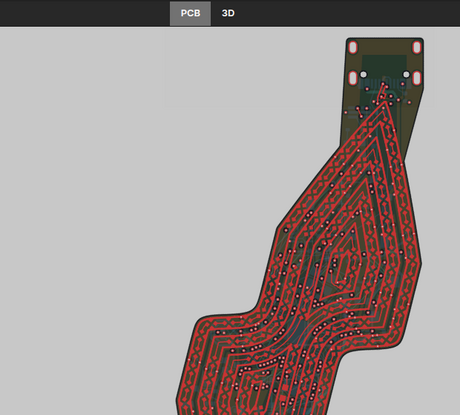

Milestone 5. A composition names package instances, the board's own parts and the nets joining them; recomposing the
RP2350A minimal board and easy2350 gives their netlists back net for net, with easy2350's departures stated (two parts in the
other order, a reversed resistor, a joined net, a tapped test point). Three packages ingested from their datasheets. KiCad
output through easy_pcb's writer. A floorplanner by simulated annealing: inside easy2350's outline it places every part legally
with 10 % less wire than the person did. The first render put USB-C off the board; fixed, and now a rule: look at the render.

Bolt earring: board viewer
A fat, gently zigzagged ⚡, 72 × 33.7 mm, 6 layers, hanging from a USB-C plug in its top tab. 134 WS2816C on nested bolts, the field symmetric under a half turn, each LED turned 45° so data and power run along its ring on the front copper. simple_earring's circuit on the back under a 10 × 30 mm cell. Fully routed: 0 DRC errors, 0 unconnected. Every copper layer, the parts and a 3D view.
Open the bolt earring viewer →The bolt's outline in the app's Shape tools:
its generator's parameters on sliders, from crates/shape.
Earlier: the flame earring (superseded).
Where it stands
Four milestones are done. The rp2350 package (0.2.0) now covers both QFN-60 and
QFN-80 on 2 and 4 layers, and the crystal, USB, flash and decoupling, mined from Raspberry Pi's
design guide and minimal boards. Earlier: Intent schema v0 and its validator pass easy2350. A buck generator,
fast-tier checks and the first package, packages/rp2350 0.1.0, cover the RP2350's
core regulator. Starting from nothing but the part footprints, the generator places CIN and
COUT where Raspberry Pi did. Every row in the table below is measured by the same checker, and
the generated layout comes out ahead on all four checks. It is KiCad DRC clean on a 4-layer
test bench. The compiled routing.json now drives ultraroute through --regions,
and easy2350 routed that way passes the seam check on three seeds.
RP2350 core regulator: reference vs generated
Loading packages/rp2350/layouts/qfn60-4layer/compare/compare.json…
Magenta: hot loop (VIN → CIN → PGND). Cyan dashes: output loop. Yellow: feedback path. Orange: switch-node pads. Dark cut: In1.Cu keepout. Areas in mm², clearance in mm. Score is hot + 0.5 × switch node + 0.5 × output loop. The reference uses copper zones and the generator draws tracks, so part of the smaller switch-node area is narrower copper.
easy2350 validation
Loading boards/easy2350/validate.json…
Working
- Intent schema v0, JSON Schema, validator; easy2350 passes with 0 warnings
- Import from easy_pcb
design/nets.csv - Board reader on ultraroute's
kicad-pcb(pinned); copper-path search - Buck checks: hot loop, output loop, switch node, FB clearance, under-switch copper
- Buck generator; layouts in the IC's frame; pcbnew apply; test bench with KiCad DRC
- Package
rp23500.1.0: manifest, intent, 11 cited rules, 4-layer layout, verify report - Constraint compiler:
routing.jsonregions and length limits, KiCad length rules merged into the board's own - Region check and routed-board seam check; easy_pcb's released easy2350 passes all of it
- easy2350 routed by ultraroute with its blocks locked: 0 DRC errors, 0 unconnected, all lengths and regions met, block intact
- M4:
rp23500.2.0: core-regulator layouts for QFN-60/80 on 2 and 4 layers (all beat the reference), interface blocks, ports, 27 cited rules ccomp measure: pad-to-pad paths, ground under fast nets, decoupling per power pinccomp check package: a board against a package by role (wiring, block constraints, lengths, part values). References pass; easy2350's USB runs over +3V3- Rerun with ultraroute's
--regions(971e723), seeds 0–2: all pass; router's report agrees since 724f835 - M5: composer (
ccomp compose; the minimal board and easy2350 recompose exactly), packages mcp73831 / tlv62569 / lsm6dso, KiCad output (ERC clean), floorplanner (easy2350: legal, 10 % less wire than the person's; demo board 39 × 31 mm) - Research library: 143 cited claims from 41 vendor documents (buck, half-bridge, crystal, USB/return path/decoupling, CAN/protection), 17 disputes kept; every quote checked against its PDF;
ccomp library check|query - Mined the motor controller's rev A: RP2350B regulator and the XL7005A 60 V buck measured; async bucks and plane shielding in the checks
Next up
- Design rules and stack-up for composed boards, then route the demo board with ultraroute and check its seams
- Buck generator for off-chip regulators (TLV62569: output from the inductor, divider roles, SOT-23 rows)
- Package schematic sheets, so composed schematics are drawn, not labelled
- PCBGolf: shrink comma.ai's panda-jungle-style board (score = volume + vias + layers)
- Async buck in the generator; half-bridge checks (M7)
Open questions
- Intent file format: JSON for v0 (the schema is generated from the Rust types)
- EM solver for the slow tier (openEMS or other)
- Router cost grids: settled as regions in
routing.json, read with--regions - Published: github.com/sequoia-hope/circuit-composer
Blocked on
- Nothing.
Log
Research library. Five agents found and read 41 vendor app notes, datasheets and articles (TI, ROHM, Allegro,
EPC, Infineon, ST, Microchip, Abracon, Murata, Bogatin; analog.com was unreachable). They proposed 143 claims; 392 quotes were
then checked against the documents' own text. TI's AN-2155 measured more EMI with the ground under a switch node cut, against
the RP2350 datasheet's cut-out: kept as a dispute for the slow tier. Gap: IPC-2221 clearance by voltage.
Package check by role. Both minimal boards pass every hard check. easy2350 fails one: its USB pair runs
6–8 mm on B.Cu over the +3V3 plane. Judging the ultraroute-routed board found a second path-search bug
(via in a pad, track leaving on B.Cu), now fixed. PCBGolf: substitutions researched; one copper layer,
vertical USB-C, jumpers instead of vias.
Milestone 4: rp2350 0.2.0. Measuring both minimal boards found an undocumented shared decoupling cap
(ADC_AVDD with IOVDD), cut ground under every QSPI net on the QFN-80 board (the optional second memory sits
under the flash), and a path-search bug (track through a pad) now fixed.
ultraroute 971e723 reads
routing.json via --regions. easy2350, seeds 0–2: 0 DRC errors,
0 unconnected, lengths and regions met, block intact. Its report flags a via whose ring only touches the
LX cut-out's edge; fixed in 724f835, which reports all three clean.Mined rp2350-motor-controller rev A. Its RP2350B regulator matches Raspberry Pi's layout
but has ground under LX, a datasheet-versus-practice dispute. The XL7005A buck's hot loop is 26 mm².
Milestone 3: ultraroute routed easy2350 around its locked blocks; the seam check passes
(DRC, 17 lengths, 12 regions, block intact).
Published on GitHub. Milestone 3: constraint compiler and region check; sample
routing.json
sent to ultraroute. Inputs pinned to easy_pcb 2d56198 after finding its working copy changing underneath.Milestone 2: buck checks, generator and the
rp2350 package. Generated core regulator
scores 3.15 vs the reference's 3.44, DRC clean. Agreed the routing.json handoff with ultraroute.Milestone 1: intent schema v0, validator,
ccomp CLI, easy_pcb importer;
easy2350 annotated and passing. Found 4 auto-named nets easy_pcb's nets.csv misses.Project created and registered with the hub. Status page scaffolded.